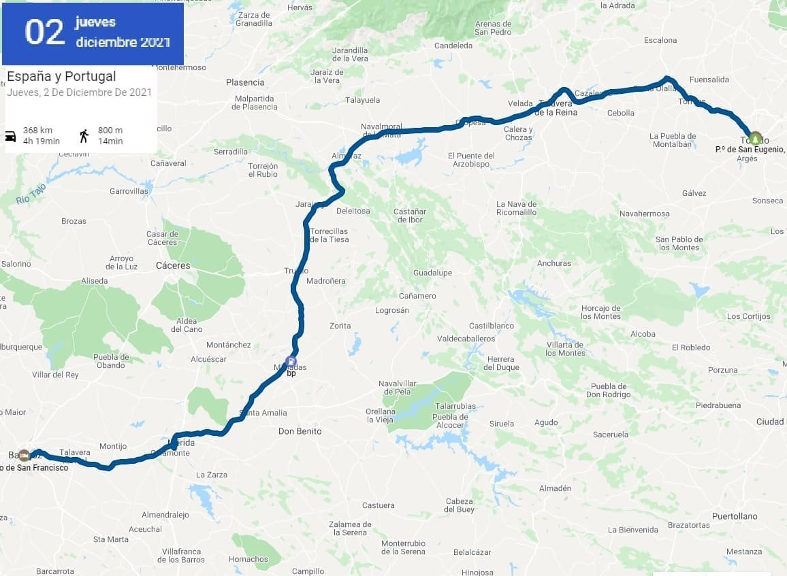
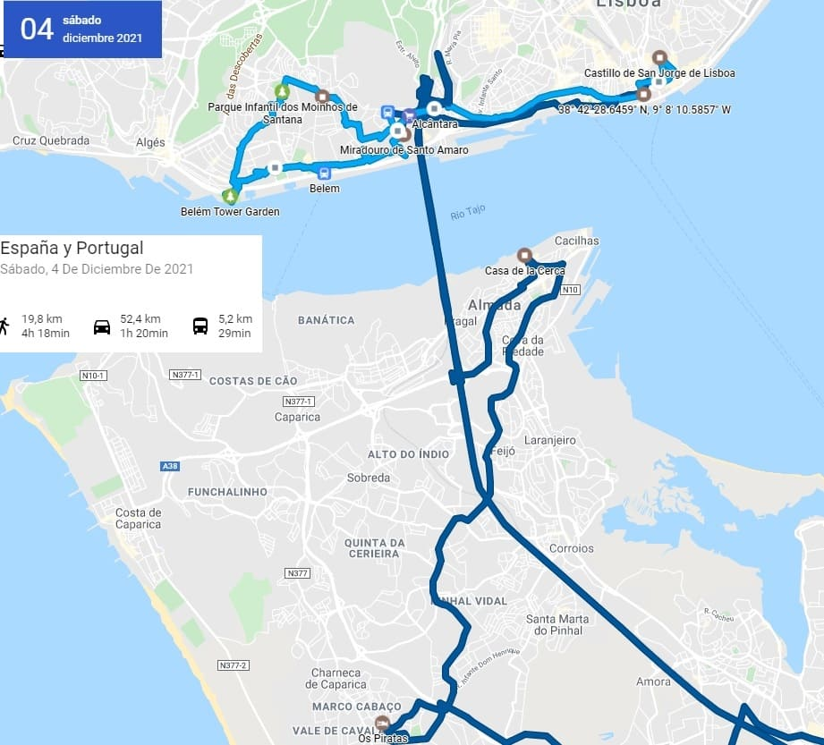
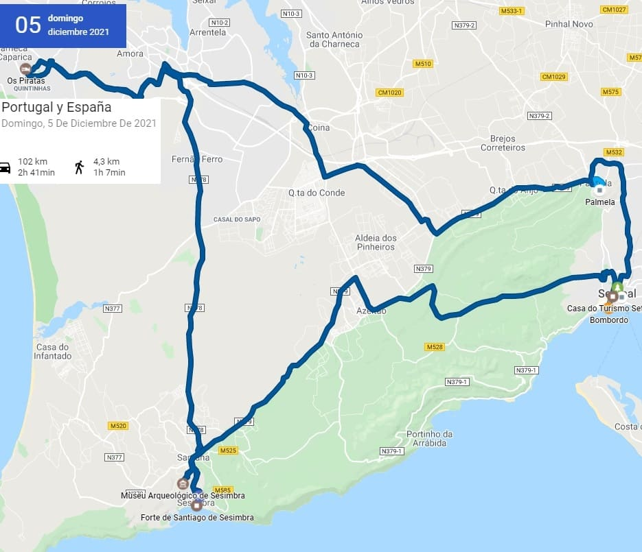
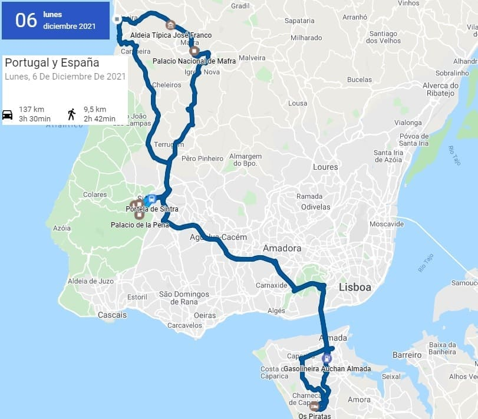
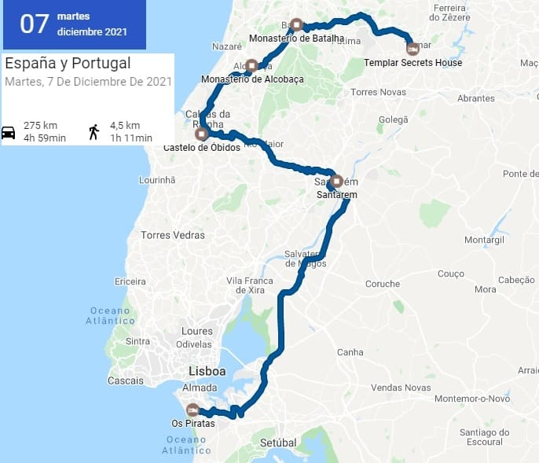
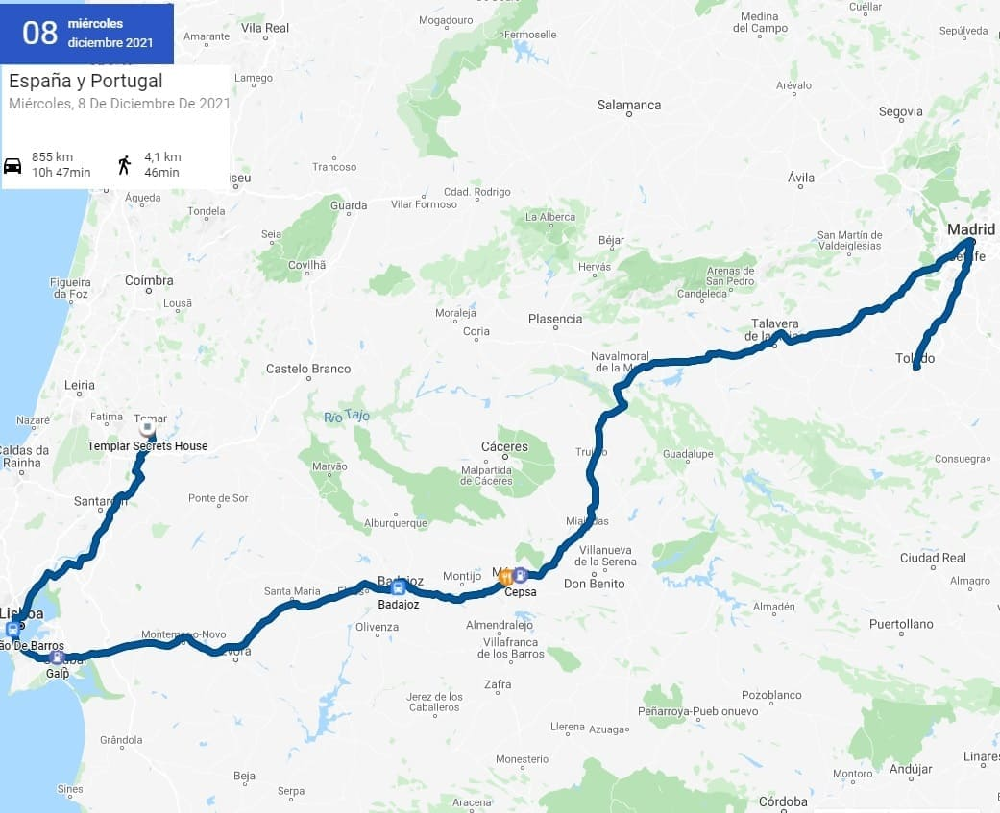

![[Valid RSS]](https://www.onepointsync.com/wp-content/uploads/2016/08/valid-rss-rogers.png "Validate my RSS feed")
3 a 8 de diciembre 2021
Dia 1, Toledo a Badajoz
La salida del primer día fue toda conducción y no vería nada, dejando Badajoz para el día siguiente. Badajoz es la capital de la provincia y la ciudad más poblada de toda la comunidad autónoma, sin embargo a pesar de ser una ciudad con una carga monumental grande, es poca conocida debido a que otras ciudades y pueblos cercanos como Mérida, Cáceres o Trujillo tienen mucho más monumentos de diferentes épocas. Badajoz destaca sobre todo por sus restos de la época islámica, como la gran muralla que tiene en torno a la vieja Alcazaba. Además debido a la cercanía a Portugal se levantaron baluartes en su muralla como sus vecinas Olivenza y Elvas. Además a diferencia de Caceres posee una catedral.
Como sitios de interes podríamos destacar algunas plazas como la de las casas coloradas, la del ayuntamiento donde se encuentra ademas la catedral. También el museo arqueológico, en el palacio de los duques de Roca, en lo alto de la ciudad donde esta la alcazaba. Además conserva puertas antiguas como la de las Palmas y edificios religiosos de interes como el convento de san Jose y el de santa Ana. También algún edificio destacado como el de la Jiralda, edificio alto de corte neoclásico.
Dia 2, Badajoz a Lisboa

Después de visitar Badajoz, iría dirección sur camino de Olivenza. Olivenza ha sido objeto de disputa durante siglos entre España y Portugal. Siendo el río Guadiana la frontera natural entre las dos naciones las ciudades que se encontraban frente a frente eran Olivenza y Elvas. Ambas tienen grandes murallas sin embargo Elvas, tiene aparte de los baluartes dos fortificaciones modernas que la hacen inexpugnable hasta la invención de la aviación.
Olivenza además tuvo mucha importancia en la reconquista contra los árabes, y posee una muralla muy lograda. La puerta de Alconchel da acceso al casco histórico donde encontraremos como monumentos más importantes el castillo y la iglesia de Santa Maria del Castillo. La iglesia mása destacada es la de Santa María Magdalena que imita el estilo portugues religioso, con columnas helicoidales que parece que se retuercen sobre sí mismas. También encontramos un par de conventos, siendo el convento de san Juan de Dios donde esta la oficina de turismo y es propiedad del ayuntamiento donde se celebran diferentes actos. El convento esta enclavado en la fortaleza de Olivenza y anexo a el estan dos de los antiguos baluartes.
Andando con el coche a unos 30 kms llegare a Elvas. Al estar muy próxima a España, podría pensarse que no hay apenas cambios pero esta ciudad esta muy integrada y ligada a Portugal y el cambio es absoluto. Si bien una parte de sus habitantes entiende perfectamente el español. Como he dicho con anterioridad esta ciudad es importante por sus fortificaciones si bien tiene un casco histórico y un par de edificios religiosos que merece la pena visitar. Uno es la iglesia de la Asunción, muy parecida a las iglesias vistas en Olivenza, y otra la iglesia de las Dominicas, una prototemplo católico de planta cuadrangular que conserva las pinturas antiguas y las columnas originales. Después de ver el centro y estas iglesias pondré rumbo hacia el museo militar, pasando por la iglesia de santa María de Alcovaça y la iglesia de san Francisco que tiene un retablo barroco muy recargado. El museo militar y las instalaciones estan anexas al antiguo convento de Santo Domingo, cuya iglesia de grandes dimensiones se puede visitar. En el museo, cuya entrada es de sólo 3 euros, podemos encontrar un paseo histórico por todas las fuerzas militares de Portugal, desde el combate, radiocomunicaciones o defensas hasta el plano musical o médico. Tiene varios carros de combate modernos, así como vehículos de principios del siglo XX. Las fortificaciones se encuentran fuera y son las de Santa Lucia y la de Santa Gracia. Merece la pena visitarlas y es gratuita.
Por último antes de salir hacia Lisboa, pararía en el acueducto, uno de los mejores conservados de Portugal.
Dia 3, Visita a Lisboa
Por la mañana lo primero que visite fue el barrio de Almada, para tomar fotos al puente de Lisboa y ver una vistá panorámica de la ciudad ya que mi hostal estaba muy cerca. El coste de los hostales y hoteles es mucho más barato al otro lado del río y si quieres visitar los pueblos al sur de Lisboa merece la pena, Ademas las playas de esta zona y sitios de ocio nocturno son mejores estando mi hostal en Caparica.También se puede ver con detalle el Cristo rey de Lisboa. Para visitar en este barrio tenemos la casa de la Cerca que tiene un museo en su interior, y alguna de sus calles.
Después puse rumbo a Lisboa aparcando muy cerca del puente ya que justo este y la carretera limitan la zona libre de polución de la ciudad entre este y oeste. Primente visite el oeste de la ciudad estando los monumentos más importantes al oeste pero el casco histórico y la mayoría de cosas que ver al este.
En el oeste lo primero que vería sería la capela de santo Amaro muy cerca de donde aparque el coche. Siguiendo la calle junto al río vería diferentes casas palaciegas llegando ya al final al palacio del presidente de la República que no es visitable, pero si el museo del Presidente. Destaca la estatua de Alfonso de Albuquerque que es sitio de reunión de muchos guías que comienzan a enseñar la ciudad desde este punto. Muy cerca esta el monumento más famoso y visitado de todo Portugal, el monasterio de los Jerónimos cuya iglesia es desde mi punto de vista la más bonita de Portugal. En importancia además estaría por encima del monasterio de Tomar, siendo grande y ocupando algo menos que su monasterio. Este monasterio tiene dos grandes claustros cuyo precio de entrada, 10 euros, me parece excesivo ya que la visita a la iglesia es gratuita. Además la entrada reducida es díficil de conseguir ya que profesores o estudiantes les piden una hoja certificada de que vienen a Lisboa por estudios. Además puedes visitar el museo arqueológico también anexo al monasterio y el museo de la Marina.
Teniendo un día para aprovechar al máximo Lisboa, no visitaría estos museos y fui directamente a ver la torre de Belén junto al mar. También el monumento a los caidos en combate.
Después iría hacia el norte al palacio de Aduja. La entrada no es cara siendo de 5€ y la reducida de 2,5€. Este palacio cuenta con muchas salas importantes como el salon comedor donde los reyes del siglo XIX han realizado algunas celebraciones y el salon del trono. Este palacio fue mandado construir en los últimos años de la monarquía y tiene previsto terminar de restaurarse en 2030. Cuando fui yo es verdad que había objetos que estaban moviendose pero casi la totalidad de las salas estaban completas. Tanto por la cantidad de salas como por la calidad y detalles tiene mucho más valor el interior que cualquier otro palacio de Portugal, incluyendo los de Sintra.
Después de la visita iría a comer a un restaurante cerca del puente de la ciudad para después cojer un autobús hacia el casco histórico.
Del casco vería primeramente la catedral, La Sé de Lisboa y el castillo de San Jorge que pese a costar 10€ por ser profesor entraría sin pagar. Este castillo y muchos de los monumentos de la capital no valen el precio que cuesta la entrada pero por ser la capital y ser más turística que otros sitios tiene esos precios. El castillo de san Jorge es muy parecido al de Sesimbra con la diferencia que el último la entrada es gratuita. El de Palmela es más bonito y tambien es gratis entrar, castillos que visitaría al día siguiente de ver Lisboa.
Después bajaría a la rua Augusta y su arco y la plaza del comercio, plaza más famosa de todo Portugal junto con la plaza de Luis Camoes, donde se encuentra el ayuntamiento de Lisboa.
Además la ciudad tiene mucho que ofrecer, a parte de la gran cantidad de monumentos, existe una gran oferta gastrónomica donde destaca el bacalao. El pescado es el plato estrella de la ciudad y también del sur de Portugal.
Dia 4, pueblos al sur de Lisboa y Setubal
El primer pueblo en visitar sería Palmela. Lo más destacable de este pueblo es su castillo, si bien la iglesia de san Juan es muy bonita. Con sus azulejos en las paredes y sus pinturas en el techo, que sigue la linea de muchas iglesias portuguesas de la zona.
El castillo de Palmela es una gran fortaleza amurallada que hacía de soporte al castillo de san Jorge. En el se podía hacer señales en caso de necesitar ayuda y se divisaba una gran linea de pueblos desde esa altura siendo un lugar especial para hacer fotos panorámicas de la zona. Ademas en su interior existe las ruinas de una iglesia antigua antes de eregirse otra iglesia que hay en su interior. Posiblemente esa iglesia fuera anterior al castillo.
Después fui a Setúbal, ciudad importante de la zona que posee universidad y todos los servicios de una gran ciudad. Como monumentos destacados, la catedral que posee la misma estructura que casi todas las iglesias de la zona, con columnas transversales pintadas y un techo pintado y con diferentes detalles en azulejos. El convento de Jesús con las columnas de la iglesia helicoidales, la iglesia de san Julian y la plaza del ayuntamiento. Por último iría al puerto donde comería en un restaurante una parrillada de pescado típico de la zona.
Para terminar el día visite el castillo de Sesimbra en el sur en el que había que subir una carretera antes de la llegada del pueblo y desde el que se podía tener increíbles vistas del mar. Decir que debido a que mi viaje fue en una época en la que no hay apenas turistas no tuve problemas para aparcar y subir esa carretera pero en verano supongo que no se podrá hacer.
En el pueblo de Sesimbra pude pasear por la playa, y visitar el forte de Santiago. Sin embargo, no recomiendo venir a este pueblo porque para playas existen otros lugares mejores y donde se puede aparcar gratis, ya que el pueblo entero es de pago para aparcar y además es que no existen mucho sitio. La playa esta bastante bien pero en la parte oeste justo donde estaba alojado esta mejor.

Dia 5, Norte de Lisboa, Mafra, Ericeira y Sintra
Habiendo ya visto la zona al sur de Lisboa iría a ver la zona al norte. Mi intención era ver Sintra, pero antes me desplazaría unos kilometros para ver el palacio de Mafra. Uno de los palacios reales más importantes junto al de Aduja y al de Sintra (el de la Pena y el palacio Nacional). Este palacio guarda mucha similaridad al monasterio de El Escorial en España debido a su estructura y su complejo que comprende monasterio, palacio, biblioteca y basílica. Su estructura es bastante robusta y rocosa, ocupando una amplia extensión y siendo la mayoría de sus salas muy grandes y muy altas. El interior es bastante austero salvo pequeñas excepciones. La iglesia es bastante grande y esta hecha de granito y mármol mayormente.
Las salas más grandes son la de cazadores y las salas de la realeza en la segunda planta. La sala más importante es la biblioteca que alberga 40.000 volúmenes únicos.
Después fui a Ericeira, un pueblo costero famoso por sus enormes olas y por su arquitectura homogénea de casas azules y blancas. Entre medias de este pueblo visite la aldea Portuguesa, una serie de réplicas a pequeño tamaño de un pueblo portugués.
Después ya bajaría a Sintra a medio día comiendo por el camino. Aparcaría junto a la estación donde hay un gran parking. Debido a la gran afluencia a esta ciudad que puede que sea la más visitada de todo Portugal tras Lisboa, es difícil aparcar, aun siendo enorme y eso contando que las fechas que fui yo eran temporada baja. El pueblo no es muy grande y esta a rebosar de turistas y de tiendas pero debido a la gran extensión en la que se encuentran los diferentes palacios se puede andar sin dificultad.
Lo primero que visite fue la calle mayor y el ayuntamiento y ya desde lejos se veía un palacio blanco. El palacio Nacional. Entre los 5 o 6 espacios visitables, el Nacional, el de la Pena, el de la Regaleira, el de Monserrate, el castillo de Mouros y el convento de los Capuchinos, decidí ir al palacio Nacional y el palacio de la Pena.
- El castillo de Mouros el más antiguo de todos, de la época de la reconquista, y perteneciente antes a los árabes que dominaban esa zona.
- El palacio Nacional es de hace 5 siglos, terminado casi en 1500 y posteriormente reformado en varias ocasiones.
- El convento de los capuchinos estaría edificado un en el siglo XVI y es el más austero si bien tiene bastante historia.
- El palacio de la Pena es el palacio más famoso del complejo y es el tercer monumento más visitado en Portugal después del monasterio de los Jeronimos en Lisboa y del monasterio de Batalha. Se edifico como residencia de verano a partir de la obtención de las tierras de un antiguo monasterio en la zona que fue destruido tras el terremoto de Lisboa de 1755.
- El palacio de la Regaleira y el de Monserrate son palacios privado a los que se pueden visitar tanto sus jardines como su interior y es del siglo XIX.
Las salas que más destacan son la de los Cisnes y la de Pegas con detalles de cisnes y golondrinas respectivamente. Y por encima de todas las salas destaca la sala dos Brasoes (sala de los escudos) cuyas paredes están decoradas enteras de azulejos y que tiene una cúpula que alterna los detalles dorados y las pinturas, conteniendo numerosos blasones de Portugal y escudos de cada duque o conde que existía en esa época.
Para subir al palacio de la Pena hay multitud de carricoches, en la que por 10 euros te podrían subir. La subida desde el autobús es cada hora y va muy lleno con lo que la mejor opción es subir andando. Yo intente subir por una senda a través del bosque pero había una puerta cerrada y no pude pasarla con lo que tuve que volver a la carretera. Una vez llegado a la entrada me tocaría subir todo el parque exterior, donde contemplaría un gran lago y algunas torres defensivas. El palacio es sin duda precioso pero en el interior tampoco había grandes salas como el palacio de Aduja que es sin duda el mejor palacio de Portugal. Si bien el día fue soleado al llegar la tarde se vino la niebla y no pude tener unas grandes vistas ya que las nubes bajas estaban a la altura del palacio y no se veía más de 1 metro. Por último regresaría a mi hostal en el barrio de Caparica.
Dia 6, de Lisboa a Tomar
Salí de Lisboa hacia Santarem, ciudad que si bien tiene varios sitios de interés me fui con la sensación de no estar echa para el turista de a pie. Santarem es la capital de uno de los distritos de Portugal, y una de las ciudades más antiguas de Portugal en la que se han encontrado restos del siglo VIII antes de Cristo, muy posiblemente de la cultura tartesa cuyo eje iba desde Badajoz hasta Cadiz. Desde ahí su mayor importancia llegaría en la edad media y donde iría perdiendo fuerza frente a la capital. Es conocida por ser la capital del gótico portugues por la cantidad y calidad de sus edificios religiosos de ese estilo durante los siglos XIII y XIV.
Los edificios religiosos más importantes después de la catedral son el convento de santa Clara, el convento de Nuestra Señora del Sitio, el convento de san Francisco, la iglesia de la Piedad, la iglesia de santa María de Graça, la iglesia Hospital de la Misericordia, la iglesia de santa María de la Maravilla y la capilla de santa Iria.
Otros sitios de interés son el mercado central, que contiene una buena colección de azulejos con temática del mundo campestre, la torre das Cabaças y la torre del reloj (antiguo ayuntamiento).
Después tomaría dirección norte con destino Óbidos. Su nombre significa ciudad fortificada y no es para menos puesto que su muralla esta conservada en su totalidad. Este pueblo es considerado como uno de los más turísticos de Portugal y es debido a que tiene un casco histórico reducido pero cuidado en la totalidad. La muralla se puede recorrer a pie y es de más de 1 km. No tiene ninguna barandilla por lo que hay que tener mucha precaución. Además cuenta con dos pequeñas iglesias que se conservan perfectamente como es la de Santa María y la de San Pedro. Muy cerca de este pueblo había un antiguo poblado romano y de el se conserva el acueducto que es visible ya desde la carretera.
Por último partiría para ver las tres ciudades de los monasterios de Portugal. Alcobaça, Batalha y Tomar. Primeramente iría a Alcobaça donde vería la plaza del monasterio muy amplia, y ya dentro comprobaría la amplitud de su iglesia. Lo que más me llamo la atención fue la tumba de los reyes que reposan en la iglesia con una gran cantidad de detalles en sus tumbas, con relieves referentes al cielo y el infierno y a la vida pública de Jesús. También una sala con miniaturas de santos o reyes que esta decorada además con azulejo portugues y de su amplio claustro.
Después muy cerca de allí llegaría al monasterio de Batalha que me gusto más que el de Alcobaça. Es el más importante de los tres por estar enterrados varios reyes. En el Panteón Real se encuentran las tumbas de varios de los reyes con la de Juan I en el centro de la misma. Cuenta con un claustro precioso, y con otro claustro más pequeño llamado claustro menor. En la sala capitular reposan las tumbas de dos soldados fallecidos en la Primera Guerra Mundial. Esta sala esta custodiada siempre por dos centinelas las 24 horas del día y en mi caso había 4 soldados cuando estuve, los dos que había y los dos que le remplazaron ya que asistí al cambio de guardia.
Además cuenta con una serie de capillas sin acabar llamadas las Capelas Imperfetas, que fueron diseñadas por el rey Eduardo para que fueran enterrados ahí sus descendientes pero no sería así y quedaron sin finalizar.
Ya de noche llegaría a mi hostal en Tomar.
Dia 7, Tomar a Lisboa y a Toledo
En Tomar se encuentra uno de los monasterios más grandes del mundo.
El Convento de Cristo, en Tomar, Portugal, perteneció a la Orden del Temple y es uno de los principales monumentos de la arquitectura portuguesa. El variado conjunto que conforma el Convento de Cristo fue construido entre los siglos XII y XVII, habiendo sufrido sucesivas adaptaciones que reflejaban los distintos tipos de uso que albergaba y las características estilísticas de la arquitectura de los diferentes momentos históricos, compartiendo rasgos románicos, góticos, manuelinos, renacentistas, manieristas y los llamados estilos de suelo.
Al entrar se ven dos claustros, uno el de Lavagem, con sencillos arcos góticos y azulejos blancos y azules, otro el claustro do cemiterio con arcos apuntados y columnas dobles. Estos dos claustros pertenecen a ampliaciones del convento. Tambien se encuentra la sacristia nueva.
Después se pasa a ver la charola que es núcleo del monasterio es la charola (girola) del siglo xii, el Oratório dos Templários y está decorada con espectaculares pinturas que reflejan el poder y riqueza de la orden del temple en Portugal.
De ahí se pasa a ver el claustro principal, de los Felipes, en homenaje a Felipe II que estuvo casado con una reina portuguesa y fue el período en el que España tuvo todos los dominios de Portugal.
Este claustro conecta con otros como el de santa Barbara, el de la Hospiedería que es de los más recientes y de menos valor, el claustro de Micha donde esta el horno de pan, el claustro das necessarias y por último el claustro dos corvos, donde esta el refectorio, cocina y almacenes.
Con esto queda conformado todo el monasterio, formado por 8 claustros y multitud de habitaciones y salas, siendo el más grande en el que haya estado hasta la fecha.
No muy lejos del monasterio fortaleza, ya que tiene la alcazaba que se levanto de manera defensiva ya que era sede de la orden templaria, se encuentra el acueducto dos Pegoes, mandado contruir por Felipe II para traer agua al monasterio.
El pueblo tiene también cosas que ofrecer como la iglesia de Juan Bautista, la de santa Maria del Olival, la capilla de san Gregorio, el barrio de la judería con su sinagoga, y la plaza del ayuntamiento.
Una vez finalizada la visita volvería a Toledo pasando por Lisboa para recoger a gente y economizar mi viaje a través de Blablacar.